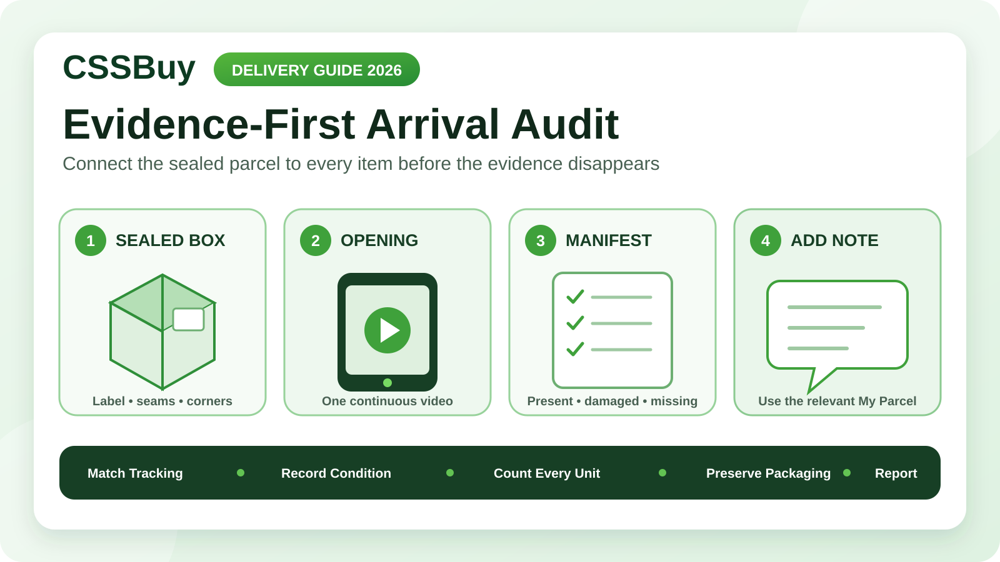

CSSBuy Parcel Delivery Guide 2026: Build an Evidence-First Arrival Audit
The delivery notification is not the end of a CSSBuy reverse purchase. It is the start of a short verification window in which the condition of the parcel can still be observed clearly. Once the tape has been cut, the packaging discarded and every item mixed with your existing belongings, a simple question such as “Was this missing when the box arrived?” becomes difficult to answer.
CSSBuy’s current Buy For Me workflow directs buyers to track dispatched packages in User Center under My Parcel. After receipt, the same official process says the buyer can confirm delivery there and select the relevant parcel to use Add Note for after-sales questions. The practical lesson is straightforward: preserve the relationship between the physical box and its digital parcel record until your checks are complete.
This guide is an arrival audit, not an unboxing ritual. Its purpose is to create enough orderly evidence to distinguish delivery damage, missing contents, packing problems and ordinary product disappointment.
Prepare before the courier arrives
Open the CSSBuy parcel record and create a simple receiving sheet before delivery day. Record the parcel number, carrier tracking number, expected item count and the names or order references of the contents. Save the warehouse or parcel photos you used when approving shipment.
Do not rely on memory. A consolidated parcel may contain several seller orders, duplicate-looking products and accessories packed inside larger items. A written manifest gives you a fixed list to reconcile against the box.
Prepare a clear surface, good lighting, a scale if available and a phone with enough storage for one continuous video. This is not about producing cinematic footage. It is about avoiding pauses caused by a full memory card, a dark room or a missing cutting tool.
Treat the unopened box as evidence
Before cutting anything, photograph all visible sides of the parcel. Include the shipping label, tracking number, corners, seams, tape and any carrier damage sticker or repacking mark. Take one wider image that shows the entire package and several closer images of unusual areas.
If the carton is crushed, wet, punctured or partly open, document that condition while it is still unchanged. Do not hide the problem by pressing the cardboard back into shape. The original condition helps explain what may have happened later.
Check whether the label identifies the same tracking number shown in My Parcel. If the carrier provides a delivered weight, save it. If you have a household scale, photograph the sealed package on the scale without claiming that a consumer scale is an official carrier measurement. It is a supporting observation, not a substitute for logistics records.
Record one continuous opening sequence
Start the video with the parcel still sealed. Slowly show the label and every side, then open the outer packaging without moving the camera away. Keep the contents in the box until the first internal view has been recorded.
An unbroken sequence connects three facts: this is the tracked parcel, this was its sealed condition and these were the first visible contents. Short clips taken after the box is already open do not establish that connection as well.
Cut carefully along an edge that will not damage items underneath. If the box has been heavily compressed, open it slowly because pressure may have shifted products toward the seam. Preserve the shipping label, outer carton and internal packing materials until the audit is finished.
Count packages before judging products
Your first reconciliation is not a quality inspection. Count the internal units exactly as they appear: boxes, bags, wrapped bundles and loose pieces. Compare that count with the receiving sheet.
A bundle may contain several products, and one product may have several separate pieces. Use neutral labels such as Unit 1, Unit 2 and Bundle A during the first pass. This prevents an early assumption from turning into a false missing-item report.
Look inside cavities before concluding that something is absent. Small accessories may be placed inside shoes, bags or larger retail boxes to save space. Packaging removed at the warehouse may also mean the number of retail boxes does not equal the number of purchased items.
Reconcile by order reference, not by appearance
After the physical count, match each product to its original order. Use model codes, colour, size label, distinctive construction, quantity and any warehouse photo detail that separates similar items.
Do not write “one black shirt is missing” if three black shirts were included. Identify the exact order line and variant that cannot be matched. A useful discrepancy statement is: “Parcel record contains four units for Order X; three units are present, and the navy size L line has no matching item.”
Mark every manifest line as present, damaged, incomplete or unresolved. Unresolved is important. It gives you space to examine a bundle again instead of forcing an immediate conclusion.
Separate parcel damage from product condition
External damage and product damage are related but not identical. A crushed corner may leave every product unharmed. A perfect outer carton may contain a product that was already damaged or insufficiently protected.
Document the path from the outside to the affected item. Photograph the damaged carton area, nearby packing material, the product’s position and the product damage itself. This sequence is more informative than a close-up of a cracked object with no context.
For clothing, inspect moisture, cuts and deep transfer marks before focusing on small finish differences. For rigid goods, check corners, panels, hinges and pressure points. For electronics or moving parts, record the physical arrival condition before testing and follow safe operating practices appropriate to the product.
Do not discard small components
Loose hardware, tags, straps, laces, adapters or decorative pieces can hide in wrapping or the base of the carton. Empty every packing layer onto the clean surface and inspect it before disposal.
If a product is incomplete, photograph the complete set of received components beside the open product package. Then compare that arrangement with the listing information, your order notes and warehouse images. Avoid claiming a missing accessory solely because you expected one; first establish that it formed part of the purchased configuration.
Keep barcodes, size stickers and internal labels visible in your evidence. They help connect a physical unit to the order line being discussed.
Build a discrepancy file, not a complaint collage
Create one folder for the parcel. Use a predictable sequence: 01 sealed box, 02 label, 03 external damage, 04 opening video, 05 first internal view, 06 manifest layout, 07 affected item and 08 close detail. Keep the original files as well as any compressed copies used for support.
Write a short incident summary with five facts: parcel number, affected order, expected state, observed state and requested review. If quantity is disputed, include both the expected and received counts. If damage is involved, describe where it appears and how the packaging around it looked.
A long emotional narrative can bury the useful evidence. The support note should make the discrepancy easy to reproduce from the attached record.
Use the correct CSSBuy record
CSSBuy distinguishes the international parcel stage from the earlier purchasing and warehouse stages. Its current official flow places dispatched-package tracking in My Parcel and directs after-sales questions about a received parcel to the relevant parcel’s Add Note function.
That routing matters. A warehouse seller return concerns an item before international dispatch. An arrival issue concerns a parcel that has passed through international logistics and delivery. Start from the record that represents the stage where the issue appeared.
In your first note, provide the parcel number and exact order line even when they are visible in the account. State whether the outer package showed damage, whether the opening was recorded and what evidence is available. Ask for the next required step rather than guessing the outcome.
Do not overstate what the evidence proves
A video can show what you observed, but it cannot automatically prove why something happened. A scale reading can indicate a possible discrepancy, but packaging changes and measurement error may affect comparisons. A damaged outer box suggests logistics impact, but it does not explain every product defect.
Describe evidence precisely: “The sealed parcel measured 6.2 kilograms on my household scale” is stronger than “The carrier stole two kilograms.” Facts invite investigation; accusations demand a conclusion before the records have been compared.
CSSBuy’s current workflow also warns that international shipping can involve delays, customs action, taxes, package damage or missing packages and that third-party logistics and customs are outside CSSBuy’s direct control. That makes careful documentation more important, not less.
Preserve the parcel until the case is routed
Keep the outer carton, label, tape, internal packaging and affected goods while CSSBuy or the carrier determines what information is needed. Do not repair, wash, wear, resell or dispose of a disputed product before documenting it and receiving instructions.
If the package was wet, prioritise personal safety and prevent further damage, but document the condition first when it is safe to do so. If a product appears hazardous, leaking or electrically unsafe, isolate it and follow local safety guidance rather than continuing an ordinary unboxing.
Preservation is temporary control. It prevents your own actions from changing the condition under review.
Close the audit deliberately
When every line is matched and there is no unresolved damage, update your receiving sheet, save the core photos and confirm delivery through the appropriate account record. CSSBuy’s current process says completing a review can earn credit that may be used toward international delivery fees; treat any live reward terms shown in your account as the controlling version.
If there is a discrepancy, do not mark the audit complete merely because the courier status says delivered. Submit the clear incident file through the relevant parcel record and keep a dated copy of the note and attachments.
The fifteen-minute arrival protocol
A disciplined arrival audit can be simple. First, match the label to My Parcel. Second, photograph the sealed box and damage. Third, record one continuous opening. Fourth, count internal units. Fifth, reconcile every order line. Sixth, document damage or missing components in context. Seventh, preserve all packaging. Eighth, use the relevant parcel’s Add Note if review is required.
The objective is not to expect a problem. It is to avoid destroying the information needed to solve one.
A reverse purchase crosses seller handling, domestic transport, warehouse processing, international logistics, customs and final delivery. The arrival audit is the only point where you can connect the delivered box to your order record in real time. Fifteen careful minutes can turn a vague post-delivery complaint into a structured, verifiable case—or confirm that the complete parcel arrived exactly as expected.